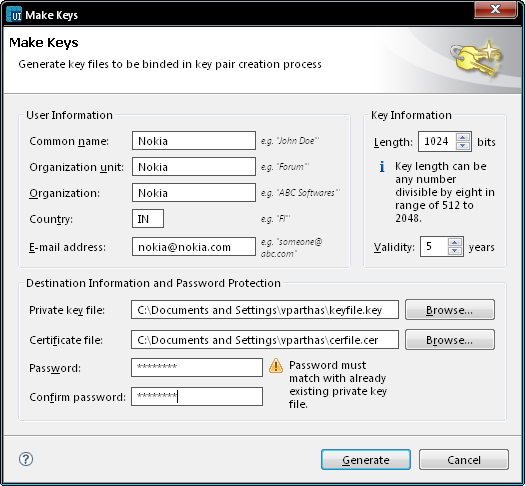

Creating New Key Pairs
Note: If you name a new key
file with the same name as some existing key file on your computer, you
must use the password for the existing key file. New key files require
a unique name.
- Select Tools -> Handle Key
Pairs.
- The Key pairs window opens.
- Click New.
- Define the key pair details:
- Enter a name for the key pair.
- The Make Keys window opens.
- In the User Information
field, enter your user information.
- In the Destination
information field, enter the file path and name for the private
key and certificate files.
- The system warns you if there already exists a key or
certificate file by that name.
- If you want to password protect your key and certificate, in
the Destination information
field, enter and confirm a password for the key and certificate.
- In the Parameters field,
enter key length.
- Key length can be any number divisible by eight in range of 512
to 2048, for example 1600.
- The system returns to the Handle
Key Pairs window.
Note: Some phones do not
accept themes that have been signed with theme creators' own
certificates. This setting can be changed in the phone in the following
way: select Tools -> App mgr -> Settings -> Software
installation and choose the correct setting.
Note: It's not mandatory to create
new key pairs every time a theme is packaged. Existing key pairs can be
re-used for subsequent packaging.

Figure: Make Keys